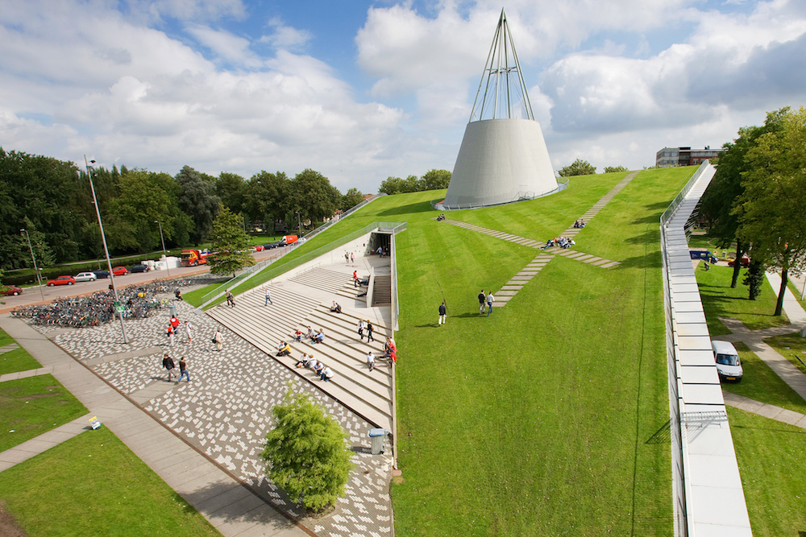
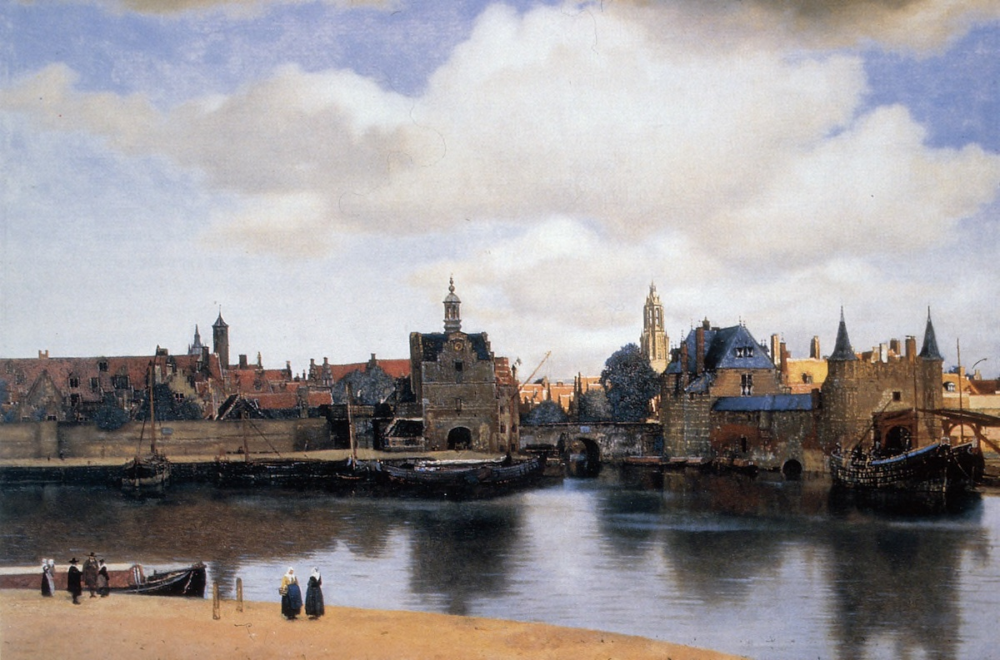

Venue
We are looking forward to have you in Delft. Please take a moment to read about the logistics.
The workshop will be hosted by the
3D geoinformation group at the Faculty of Architecture at TU Delft. The address is:
Julianalaan 134
2628BL Delft
The Netherlands
N52.005731, E4.370512



Getting to Delft
Delft is quite easy to reach. It is a 40 minute train ride from Amsterdam Airport Schiphol (AMS). In addition, it has very good railway connections to other European countries.
Through Amsterdam Airport Schiphol (AMS)
If you arrive at Amsterdam Airport, you can take a direct train to Delft, which is located between the railway stations Den Haag (The Hague) HS and Rotterdam CS. Trains are regular and the ride takes approximately 40 minutes. The train station at Schiphol is located directly under the terminal building. Please note that you should take a train to the main railway station of Delft, and not to Delft-Zuid.
Should you prefer a taxi from Schiphol to Delft, you can book a taxi with the
Schiphol Travel Taxi service.
Through Rotterdam The Hague Airport (RTM)
An alternative airport is the Rotterdam The Hague Airport, which is located next to Delft. The airport does not have a railway station, but it is connected with a bus. For instructions please refer to the route planning service
9292 (available in English).
By train
If you are arriving by train from outside the Netherlands, chances are that you will first arrive to Rotterdam Central Station. From there, you can take a direct train to Delft (~15 min). Please note that Delft has two railway stations (you have to get off at Delft, and not at Delft-Zuid).
From the Delft railway station to your hotel
Most of the hotels are easily accessible (walking distance) from the Delft railway station. Please refer to the route planning service
9292 (available in English).
If you are coming directly to the workshop, the campus of TU Delft is accessible from the train station with a number of bus lines (no. 40, 60, 64, 69, 174), and a bus stop is located directly in front of the Faculty.
Taxis are also available at the station.
By car
Delft is easily accessible by car. Parking at TU Delft is free in the designated parking lots. For parking at the hotel, please check with the hotel direclty.
From your hotel to TU Delft
For the route from your hotel to the Faculty of Architecture please refer to the route planning service
9292. Most of the hotels are in city centre, and the venue is reachable by walking.
Hotels
Delft has around 20 hotels. Most of them are situated in the old city centre, where most of the sights are. Please note that the venue (Julianalaan 134) is not in the city centre, but it is only a 10-15 minutes walk away. Here are some hotels:
Note that this list is not complete, and you might want to check offers on booking sites. Before booking please check the distance from the venue, as some hotels are much farther than the others, and you might need a bike or public transportation to reach the venue and/or the city centre. The railway station of Delft is walking distance from the city centre.
Visa
If you need an invitation letter for a visa application please contact the
organisers.
Attractions
Delft is a lovely city with a rich history. It is famous for its canals, Delft Blue pottery (Delftware), painter Johannes Vermeer, and its association with the Dutch royal family.
For attractions, please check the
website of the municipality for tourists.
